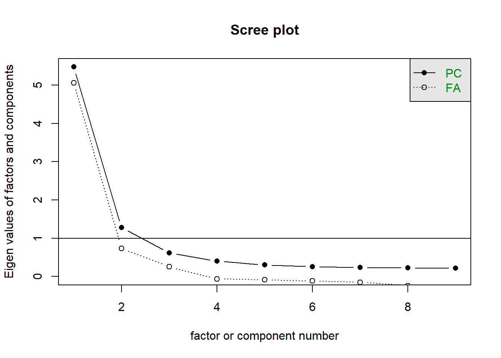
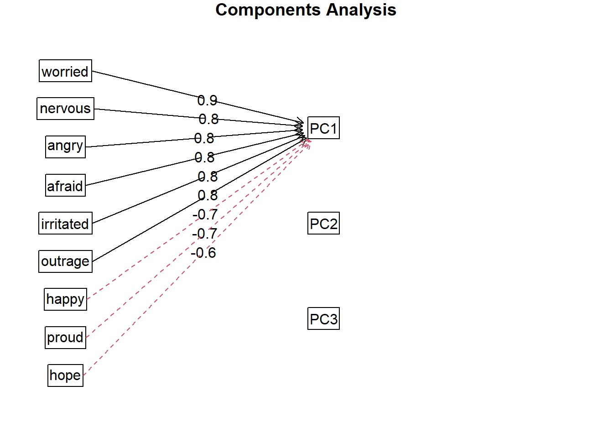
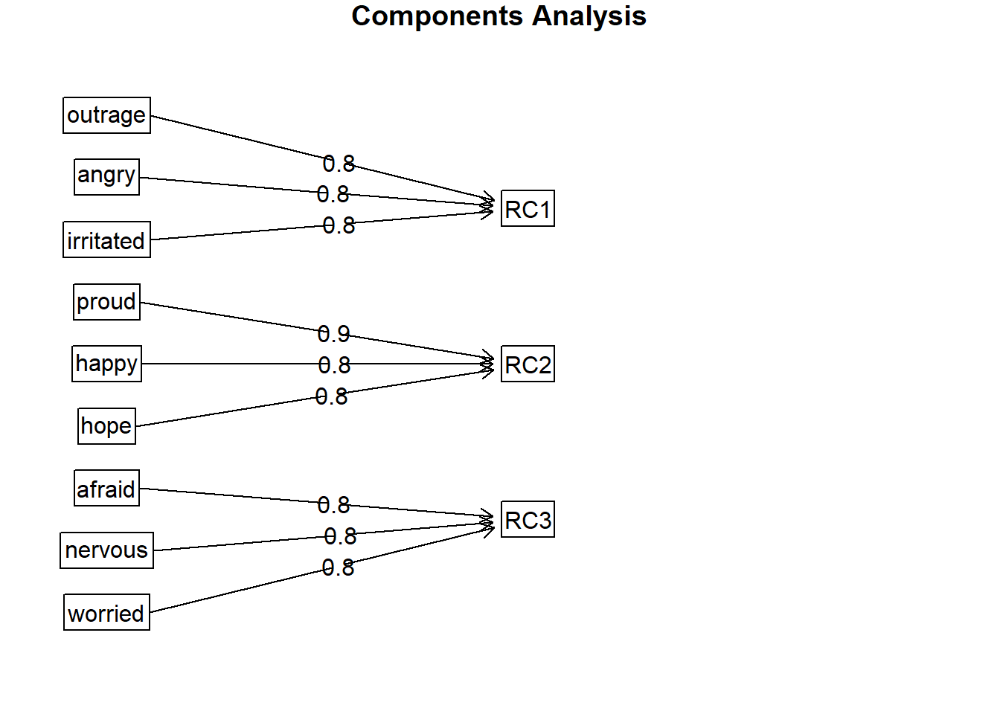
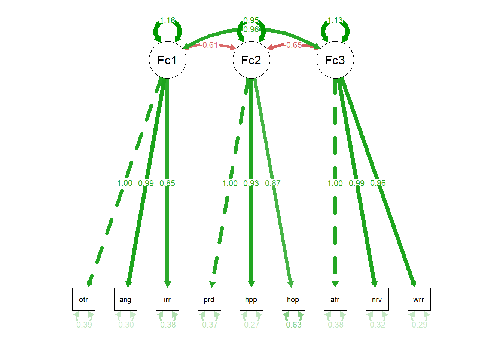
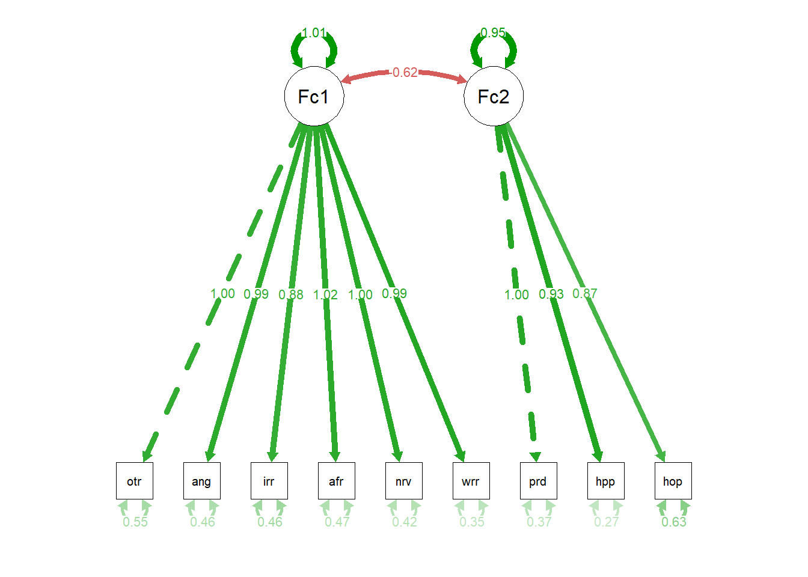

3.1 Factor Analysis to Understan Political Emotions
We will conduct both exploratory and confirmatory factor analysis using the nationally representative 2020 American National Election Survey for our data. In this survey, 9 unique political emotions variables were asked of respondents, and we will use these 9 variables to understand how political emotions are structured. Currently, it is widely believed that three latent emotional factors best explain the structure of political emotions (Marcus et al. 2006) with three primary latent factors:
Aversion to Politics: Measures include anger, outrage, and irritation
Worry about Politics: Measures include fear, worry, and nervousness
Enthusiasm about Politics: Measures include happiness, hope, and pride
We will use factor analysis to test whether a three factor solution really is the best way to explain these political emotions.
To start, we read in our data, in this case the 2020 American National Election study. Then we save a new data frame that includes only the nine political emotions variables we want to include in our analysis. We will use this data frame throughout the code. Once we have saved the political emotions variable as a new data frame, we recode all the negative values to NA as these are non-substantive responses which should be removed (as indicated in the associated codebook).
Next, we change the variables names to something that is more informative. This will aid in interpretation of the factor analysis results and should not be skipped. Lastly, we use the skimr package to quickly skim the variables in our dataset. We want to see the minimum value = 1 with no negative values, since negative values should be treated as missing data.
library(haven) #Imports stata filelibrary(skimr) #For data evaluation library(psych) #For exploratory factor analysislibrary(corrplot) #To graph correlations library(lavaan) #For confirmatory factor analysislibrary(semPlot) #For graphing CFA results library(GPArotation) #For factor rotationanes <-read_dta('C:/Users/Stefani.Langehennig/OneDrive - University of Denver/Documents/research/surveys-textbook-data/anes_timeseries_2020_stata_20220210.dta')df <-data.frame(anes$V201115, anes$V201116, anes$V201117, anes$V201118, anes$V201119, anes$V201120, anes$V201121, anes$V201122, anes$V201123 ) #Save the variables you want to include in your factor analysis into a new data framedf[df <=-1] <-NA#Set missing values to NA to not include in analysisnew_names <-c("hope", "afraid", "outrage", "angry", "happy", "worried", "proud", "irritated", "nervous") #Give your variables new informative names # Update column namescolnames(df) <- new_names #Apply new names to your data frameskim(df) #Checks the variables in your data frame; evaluate for missing data
Data summary
Name
df
Number of rows
8280
Number of columns
9
_______________________
Column type frequency:
numeric
9
________________________
Group variables
None
Variable type: numeric
skim_variable
n_missing
complete_rate
mean
sd
p0
p25
p50
p75
p100
hist
hope
23
1
2.53
1.17
1
2
3
3
5
▆▆▇▃▂
afraid
15
1
3.39
1.23
1
3
3
4
5
▂▅▇▇▆
outrage
18
1
3.60
1.25
1
3
4
5
5
▂▃▆▇▇
angry
17
1
3.58
1.20
1
3
4
5
5
▂▃▇▇▇
happy
20
1
1.94
1.05
1
1
2
3
5
▇▃▃▁▁
worried
12
1
3.69
1.16
1
3
4
5
5
▁▃▆▇▇
proud
27
1
2.00
1.15
1
1
2
3
5
▇▃▃▂▁
irritated
14
1
3.85
1.11
1
3
4
5
5
▁▂▅▇▇
nervous
9
1
3.54
1.20
1
3
4
5
5
▂▃▇▇▇
3.1.0.1 Step 1: Evaluating Correlations Between Political Emotions
First, we need to check the correlations between your variables - here, political emotions - to see how related each of the individual items are. Below, we create a matrix with all the correlations between the individual items and graph the correlations using a heat-map for easier viewing.
#Step 1: Evaluate correlations cor_matrix<-cor(df, use ="pairwise.complete.obs") #Saves correlation matrixcorrplot(cor_matrix, method ="circle") # Plot correlation matrix as a heatmap
Results indicate at least two and likely three distinct factors in the political emotions’ variables. Three factors would match the dominant belief in the literature on how political emotions are structured (Marcus et al. 2006). The three positive emotions are clearly positively related to each other with smaller and negative coefficients to the other six emotions. For the negative emotions, all six items are positively and significantly related to one another indicating they might all be measuring the same concept. However, closer examination of the results indicates that being afraid is more highly correlated with being worried or nervous than it is anger, outrage, or irritation. That matches the underlying theoretical belief that those three items represent an “anxiety about politics” factor, whereas anger, outrage, and irritation represent an “aversion” factor towards politics.
Conducting a factor analysis will help us better understand how these 9 individual political emotions are related to one another. We will conduct both exploratory and confirmatory factor analysis to illustrate these methods.
3.1.1 Exploratory Factor Analysis
We’ll start the factor analysis with an exploratory factor analysis approach using both principal component factor analysis (pcf) and principal axis factor analysis (paf). We’ll compare the results between these two approaches to evaluate differences. PCF handles non-linearity better than PAF approaches, so with many Likert style survey questions that are not normally distributed we utilize the PCF approach.
3.1.1.1 Step 2: Screeplot
#Step 2: Evaluate Screeplot - looking for number of factors >= ~1 scree(df) #from 'psych' package and graphs scree plot for PCF and PAF approaches

Scree Plots
We use scree plots to visually decide how many factors or components to use in our factor analyses. We usually determine this number by looking at everything that precedes the elbow.
The scree plot shows eigenvalues from a PCF and a PAF, non-rotated, factor analysis. The PCF shows two clear factors with a third worth looking into whereas the PAF shows one clear factor with a second factor that is close. Knowing what we know from the correlations we examined, we will start with a three factor solution with our exploratory analysis. If two factors does indeed fit the data better than three, the factor analysis will show that.
3.1.1.2 Step 3: Estimate the Exploratory Factor Analysis
Now, we will estimate a series of factor analyses to illustrate PCF vs. PAF Rotation Types: None, Orthogonal, & Oblique
Note the slight difference in code between the pcf and the paf approaches. The only difference is using principal for the pcf approach and fa for the paf. We also can indicate which form of rotation we want to perform for each of the factor analyses. Here, we do both no rotation and use varimax for the orthogonal rotations, and oblimin for the oblique rotations. We start with a basic three factor pcf approach without rotation.
pcf_result_no <-principal(df,nfactors =3, rotate ="none") #PCF approach with no rotationpcf_result_no
Principal Components Analysis
Call: principal(r = df, nfactors = 3, rotate = "none")
Standardized loadings (pattern matrix) based upon correlation matrix
PC1 PC2 PC3 h2 u2 com
hope -0.63 0.57 -0.11 0.74 0.26 2.0
afraid 0.82 0.21 0.35 0.85 0.15 1.5
outrage 0.81 0.30 -0.31 0.83 0.17 1.6
angry 0.82 0.29 -0.29 0.84 0.16 1.5
happy -0.72 0.54 0.09 0.81 0.19 1.9
worried 0.85 0.19 0.26 0.83 0.17 1.3
proud -0.68 0.58 0.11 0.82 0.18 2.0
irritated 0.81 0.22 -0.31 0.80 0.20 1.4
nervous 0.84 0.19 0.35 0.85 0.15 1.4
PC1 PC2 PC3
SS loadings 5.47 1.28 0.62
Proportion Var 0.61 0.14 0.07
Cumulative Var 0.61 0.75 0.82
Proportion Explained 0.74 0.17 0.08
Cumulative Proportion 0.74 0.92 1.00
Mean item complexity = 1.6
Test of the hypothesis that 3 components are sufficient.
The root mean square of the residuals (RMSR) is 0.05
with the empirical chi square 1353.7 with prob < 1.3e-282
Fit based upon off diagonal values = 0.99
Let’s evaluate the results. The first thing to review is the SS loadings row of results. The three values shown in that row are the eigenvalues for the 3 unique factors we specified. The first two factors both have eigenvalues >1 while the third factor’s eigenvalue is not quite at 1. We also want to evaluate the proportion of the variance that each factor explains. Factor 1 clearly explains the most (~61%) while the third factor only adds 7% of additional explained variance.
Next, we’ll review the actual factors and see which measures load on which factor. We see that the six negative emotions all seem to load on Factor 1 while the three positive emotions seem to load on Factor 2. The third factor seems to loosely be related to political anxiety and includes being afraid, worried, and nervous. While Factor 3 is not clearly unique in the unrotated factor analysis, the fact that there are reasonably strong factor loadings indicates that rotation may help to reveal a clearer pattern in the results.
Important
Once you assess which measures load onto which factors, always give the factors a substantive name that is intuitive.
fa.diagram(pcf_result_no) #Graphs the relationship

Finally, we can also graph the factor results and see that in the unrotated results all nine emotions load most strongly on Factor 1, even though the positive emotions and negatively related to the negative emotions. This graph takes the absolute value of the factor loadings and matches the highest factor loading for that item to the appropriate latent factor.
With our knowledge of the correlation matrix and the strong factors loadings from the unrotated pcf model, we will go ahead and rotate our factor analysis results. We will use an orthogonal rotation, varimax, which removes all shared variance between the latent factors.
pcf_result_var <-principal(df,nfactors =3, rotate ="varimax") #PCF approach with varimax rotationpcf_result_var #Rotation reveals cleaner factors that are obscured
Principal Components Analysis
Call: principal(r = df, nfactors = 3, rotate = "varimax")
Standardized loadings (pattern matrix) based upon correlation matrix
RC1 RC2 RC3 h2 u2 com
hope -0.07 0.81 -0.28 0.74 0.26 1.3
afraid 0.36 -0.23 0.82 0.85 0.15 1.5
outrage 0.82 -0.19 0.35 0.83 0.17 1.5
angry 0.82 -0.20 0.37 0.84 0.16 1.5
happy -0.27 0.83 -0.19 0.81 0.19 1.3
worried 0.42 -0.27 0.76 0.83 0.17 1.9
proud -0.25 0.86 -0.14 0.82 0.18 1.2
irritated 0.79 -0.26 0.32 0.80 0.20 1.6
nervous 0.36 -0.26 0.81 0.85 0.15 1.6
RC1 RC2 RC3
SS loadings 2.54 2.41 2.41
Proportion Var 0.28 0.27 0.27
Cumulative Var 0.28 0.55 0.82
Proportion Explained 0.34 0.33 0.33
Cumulative Proportion 0.34 0.67 1.00
Mean item complexity = 1.5
Test of the hypothesis that 3 components are sufficient.
The root mean square of the residuals (RMSR) is 0.05
with the empirical chi square 1353.7 with prob < 1.3e-282
Fit based upon off diagonal values = 0.99
fa.diagram(pcf_result_var) #Graphs the relationship

Let’s review the same three items in this analysis. Starting with the SS loadings we see that the values are much more evenly aligned across the factors with eigenvalues >=1 for all three factors. Because of this, the proportion of total variance explained is also very close across the three factors. This indicates that the rotation was needed and successful in revealing a clearer pattern in the data. There are likely three factors based on these results.
Next, by examining the factor loadings for each latent factor, we see that the results follow our theoretical beliefs. Anger, outrage, and irritation loaded on Factor 1; hope, happiness, and pride loaded together on Factor 2; and anxiety, worry, and nervousness loaded on Factor 3. When we graph the results we see that clear pattern as well. Generally, the conclusion seems to be that political emotions are structured into three unique latent factors.
The following code compares the pcf approach used above alongside the paf approach, as well as changes the rotation time to oblimin for the oblique rotational approach.
#General pcf code "principal(data frame, nfactors=x, rotate)"#General paf code "fa(data frame, nfactors=x, rotate)"#####Principal Components Factor Analysis, 3 factor solution with no rotation, orthogonal (varimax) & oblique (oblimin)pcf_result_no <-principal(df,nfactors =3, rotate ="none") #PCF approach with no rotationpcf_result_no #Reports same Eigenvalues as reported in Scree Plot
Principal Components Analysis
Call: principal(r = df, nfactors = 3, rotate = "none")
Standardized loadings (pattern matrix) based upon correlation matrix
PC1 PC2 PC3 h2 u2 com
hope -0.63 0.57 -0.11 0.74 0.26 2.0
afraid 0.82 0.21 0.35 0.85 0.15 1.5
outrage 0.81 0.30 -0.31 0.83 0.17 1.6
angry 0.82 0.29 -0.29 0.84 0.16 1.5
happy -0.72 0.54 0.09 0.81 0.19 1.9
worried 0.85 0.19 0.26 0.83 0.17 1.3
proud -0.68 0.58 0.11 0.82 0.18 2.0
irritated 0.81 0.22 -0.31 0.80 0.20 1.4
nervous 0.84 0.19 0.35 0.85 0.15 1.4
PC1 PC2 PC3
SS loadings 5.47 1.28 0.62
Proportion Var 0.61 0.14 0.07
Cumulative Var 0.61 0.75 0.82
Proportion Explained 0.74 0.17 0.08
Cumulative Proportion 0.74 0.92 1.00
Mean item complexity = 1.6
Test of the hypothesis that 3 components are sufficient.
The root mean square of the residuals (RMSR) is 0.05
with the empirical chi square 1353.7 with prob < 1.3e-282
Fit based upon off diagonal values = 0.99
pcf_result_var <-principal(df,nfactors =3, rotate ="varimax") #PCF approach with varimax rotationpcf_result_var #Rotation reveals cleaner factors that are obscured
Principal Components Analysis
Call: principal(r = df, nfactors = 3, rotate = "varimax")
Standardized loadings (pattern matrix) based upon correlation matrix
RC1 RC2 RC3 h2 u2 com
hope -0.07 0.81 -0.28 0.74 0.26 1.3
afraid 0.36 -0.23 0.82 0.85 0.15 1.5
outrage 0.82 -0.19 0.35 0.83 0.17 1.5
angry 0.82 -0.20 0.37 0.84 0.16 1.5
happy -0.27 0.83 -0.19 0.81 0.19 1.3
worried 0.42 -0.27 0.76 0.83 0.17 1.9
proud -0.25 0.86 -0.14 0.82 0.18 1.2
irritated 0.79 -0.26 0.32 0.80 0.20 1.6
nervous 0.36 -0.26 0.81 0.85 0.15 1.6
RC1 RC2 RC3
SS loadings 2.54 2.41 2.41
Proportion Var 0.28 0.27 0.27
Cumulative Var 0.28 0.55 0.82
Proportion Explained 0.34 0.33 0.33
Cumulative Proportion 0.34 0.67 1.00
Mean item complexity = 1.5
Test of the hypothesis that 3 components are sufficient.
The root mean square of the residuals (RMSR) is 0.05
with the empirical chi square 1353.7 with prob < 1.3e-282
Fit based upon off diagonal values = 0.99
pcf_result_obl <-principal(df,nfactors =3, rotate ="oblimin") #PCF approach with varimax rotationpcf_result_obl #Rotation reveals cleaner factors that are obscured
Principal Components Analysis
Call: principal(r = df, nfactors = 3, rotate = "oblimin")
Standardized loadings (pattern matrix) based upon correlation matrix
TC3 TC1 TC2 h2 u2 com
hope -0.20 0.19 0.83 0.74 0.26 1.2
afraid 0.93 0.01 0.02 0.85 0.15 1.0
outrage 0.04 0.89 0.01 0.83 0.17 1.0
angry 0.08 0.86 0.00 0.84 0.16 1.0
happy 0.02 -0.12 0.85 0.81 0.19 1.0
worried 0.80 0.12 -0.04 0.83 0.17 1.1
proud 0.09 -0.11 0.89 0.82 0.18 1.0
irritated 0.01 0.85 -0.08 0.80 0.20 1.0
nervous 0.91 0.01 -0.02 0.85 0.15 1.0
TC3 TC1 TC2
SS loadings 2.55 2.50 2.32
Proportion Var 0.28 0.28 0.26
Cumulative Var 0.28 0.56 0.82
Proportion Explained 0.35 0.34 0.31
Cumulative Proportion 0.35 0.69 1.00
With component correlations of
TC3 TC1 TC2
TC3 1.00 0.72 -0.51
TC1 0.72 1.00 -0.46
TC2 -0.51 -0.46 1.00
Mean item complexity = 1
Test of the hypothesis that 3 components are sufficient.
The root mean square of the residuals (RMSR) is 0.05
with the empirical chi square 1353.7 with prob < 1.3e-282
Fit based upon off diagonal values = 0.99
#####Principal Axis Factor Analysis, 3 factor solution with no rotation, orthogonal (varimax) & oblique (oblimin)paf_result_no <-fa(df, nfactors =3, rotate ="none") #paf modelpaf_result_no #Reports same Eigenvalues as reported in Scree Plot
Factor Analysis using method = minres
Call: fa(r = df, nfactors = 3, rotate = "none")
Standardized loadings (pattern matrix) based upon correlation matrix
MR1 MR2 MR3 h2 u2 com
hope -0.59 0.43 -0.05 0.53 0.47 1.8
afraid 0.81 0.19 0.26 0.76 0.24 1.3
outrage 0.79 0.26 -0.25 0.75 0.25 1.4
angry 0.82 0.26 -0.27 0.81 0.19 1.4
happy -0.70 0.50 0.05 0.74 0.26 1.8
worried 0.84 0.16 0.20 0.76 0.24 1.2
proud -0.67 0.55 0.06 0.75 0.25 1.9
irritated 0.78 0.17 -0.20 0.68 0.32 1.2
nervous 0.82 0.17 0.29 0.79 0.21 1.3
MR1 MR2 MR3
SS loadings 5.21 0.98 0.37
Proportion Var 0.58 0.11 0.04
Cumulative Var 0.58 0.69 0.73
Proportion Explained 0.79 0.15 0.06
Cumulative Proportion 0.79 0.94 1.00
Mean item complexity = 1.5
Test of the hypothesis that 3 factors are sufficient.
df null model = 36 with the objective function = 6.5 with Chi Square = 53763.45
df of the model are 12 and the objective function was 0.01
The root mean square of the residuals (RMSR) is 0
The df corrected root mean square of the residuals is 0.01
The harmonic n.obs is 8255 with the empirical chi square 12.82 with prob < 0.38
The total n.obs was 8280 with Likelihood Chi Square = 80.36 with prob < 3.5e-12
Tucker Lewis Index of factoring reliability = 0.996
RMSEA index = 0.026 and the 90 % confidence intervals are 0.021 0.032
BIC = -27.9
Fit based upon off diagonal values = 1
Measures of factor score adequacy
MR1 MR2 MR3
Correlation of (regression) scores with factors 0.98 0.88 0.79
Multiple R square of scores with factors 0.95 0.78 0.62
Minimum correlation of possible factor scores 0.91 0.57 0.24
Factor Analysis using method = minres
Call: fa(r = df, nfactors = 3, rotate = "varimax")
Standardized loadings (pattern matrix) based upon correlation matrix
MR3 MR2 MR1 h2 u2 com
hope -0.15 0.67 -0.25 0.53 0.47 1.4
afraid 0.40 -0.26 0.73 0.76 0.24 1.9
outrage 0.76 -0.22 0.35 0.75 0.25 1.6
angry 0.79 -0.23 0.36 0.81 0.19 1.6
happy -0.24 0.80 -0.21 0.74 0.26 1.3
worried 0.45 -0.30 0.69 0.76 0.24 2.1
proud -0.21 0.82 -0.17 0.75 0.25 1.2
irritated 0.68 -0.29 0.36 0.68 0.32 1.9
nervous 0.39 -0.29 0.75 0.79 0.21 1.8
MR3 MR2 MR1
SS loadings 2.31 2.19 2.07
Proportion Var 0.26 0.24 0.23
Cumulative Var 0.26 0.50 0.73
Proportion Explained 0.35 0.33 0.31
Cumulative Proportion 0.35 0.69 1.00
Mean item complexity = 1.6
Test of the hypothesis that 3 factors are sufficient.
df null model = 36 with the objective function = 6.5 with Chi Square = 53763.45
df of the model are 12 and the objective function was 0.01
The root mean square of the residuals (RMSR) is 0
The df corrected root mean square of the residuals is 0.01
The harmonic n.obs is 8255 with the empirical chi square 12.82 with prob < 0.38
The total n.obs was 8280 with Likelihood Chi Square = 80.36 with prob < 3.5e-12
Tucker Lewis Index of factoring reliability = 0.996
RMSEA index = 0.026 and the 90 % confidence intervals are 0.021 0.032
BIC = -27.9
Fit based upon off diagonal values = 1
Measures of factor score adequacy
MR3 MR2 MR1
Correlation of (regression) scores with factors 0.88 0.91 0.87
Multiple R square of scores with factors 0.78 0.82 0.75
Minimum correlation of possible factor scores 0.55 0.65 0.51
paf_result_obl <-fa(df,nfactors =3, rotate ="oblimin") #PCF approach with varimax rotationpaf_result_obl #Rotation reveals cleaner factors that are obscured
Factor Analysis using method = minres
Call: fa(r = df, nfactors = 3, rotate = "oblimin")
Standardized loadings (pattern matrix) based upon correlation matrix
MR1 MR3 MR2 h2 u2 com
hope -0.16 0.10 0.69 0.53 0.47 1.1
afraid 0.87 0.01 0.02 0.76 0.24 1.0
outrage 0.01 0.87 0.02 0.75 0.25 1.0
angry -0.01 0.91 0.01 0.81 0.19 1.0
happy 0.00 -0.04 0.83 0.74 0.26 1.0
worried 0.77 0.10 -0.03 0.76 0.24 1.0
proud 0.06 -0.03 0.88 0.75 0.25 1.0
irritated 0.06 0.73 -0.08 0.68 0.32 1.0
nervous 0.91 -0.03 -0.01 0.79 0.21 1.0
MR1 MR3 MR2
SS loadings 2.33 2.22 2.02
Proportion Var 0.26 0.25 0.22
Cumulative Var 0.26 0.51 0.73
Proportion Explained 0.35 0.34 0.31
Cumulative Proportion 0.35 0.69 1.00
With factor correlations of
MR1 MR3 MR2
MR1 1.00 0.82 -0.60
MR3 0.82 1.00 -0.56
MR2 -0.60 -0.56 1.00
Mean item complexity = 1
Test of the hypothesis that 3 factors are sufficient.
df null model = 36 with the objective function = 6.5 with Chi Square = 53763.45
df of the model are 12 and the objective function was 0.01
The root mean square of the residuals (RMSR) is 0
The df corrected root mean square of the residuals is 0.01
The harmonic n.obs is 8255 with the empirical chi square 12.82 with prob < 0.38
The total n.obs was 8280 with Likelihood Chi Square = 80.36 with prob < 3.5e-12
Tucker Lewis Index of factoring reliability = 0.996
RMSEA index = 0.026 and the 90 % confidence intervals are 0.021 0.032
BIC = -27.9
Fit based upon off diagonal values = 1
Measures of factor score adequacy
MR1 MR3 MR2
Correlation of (regression) scores with factors 0.96 0.96 0.94
Multiple R square of scores with factors 0.92 0.92 0.88
Minimum correlation of possible factor scores 0.84 0.83 0.76
The results show interesting patterns. Both unrotated models reveal nearly identical results, where as all four rotated results revealed a likely three factor solution. By drawing the same conclusions from the different approaches, that makes it more likely that the three factor solution is best fit for the results.
3.1.2 Confirmatory Factor Analysis (CFA)
Because we have a priori theory on the appropriate factor structure for these 9 political emotions, we can also use a confirmatory factor analysis to test that three factors does best fit the data.
The lavaan package is needed for this type of analysis. Because we are testing a priori theory with this approach, we have to specify which items create which latent factor. First, we will use the three factor solution theory, which suggests we will find:
Factor 1 = Outrage, anger, and irritation
Factor 2 = Pride, happiness, and hope
Factor 3 = Being afraid, worried, and nervousness
####Confirmatory Factor Analysis# Load required packageslibrary(lavaan)# Specify the CFA model; it must include the #model <-' # Factor 1 Factor1 =~ outrage + angry + irritated # Factor 2 Factor2 =~ proud + happy + hope # Factor 3 Factor3 =~ afraid + nervous + worried'# Step 3: Fit the CFA model with varimax rotationfit <-cfa(model, data = df)# Step 4: Summarize the resultssummary(fit, standardized =TRUE, fit.measures =TRUE) #Gives you summary statistics of the CFA
lavaan 0.6.16 ended normally after 34 iterations
Estimator ML
Optimization method NLMINB
Number of model parameters 21
Used Total
Number of observations 8217 8280
Model Test User Model:
Test statistic 403.975
Degrees of freedom 24
P-value (Chi-square) 0.000
Model Test Baseline Model:
Test statistic 53418.915
Degrees of freedom 36
P-value 0.000
User Model versus Baseline Model:
Comparative Fit Index (CFI) 0.993
Tucker-Lewis Index (TLI) 0.989
Loglikelihood and Information Criteria:
Loglikelihood user model (H0) -89742.500
Loglikelihood unrestricted model (H1) NA
Akaike (AIC) 179526.999
Bayesian (BIC) 179674.292
Sample-size adjusted Bayesian (SABIC) 179607.558
Root Mean Square Error of Approximation:
RMSEA 0.044
90 Percent confidence interval - lower 0.040
90 Percent confidence interval - upper 0.048
P-value H_0: RMSEA <= 0.050 0.996
P-value H_0: RMSEA >= 0.080 0.000
Standardized Root Mean Square Residual:
SRMR 0.018
Parameter Estimates:
Standard errors Standard
Information Expected
Information saturated (h1) model Structured
Latent Variables:
Estimate Std.Err z-value P(>|z|) Std.lv Std.all
Factor1 =~
outrage 1.000 1.078 0.864
angry 0.995 0.009 105.099 0.000 1.072 0.891
irritated 0.854 0.009 93.941 0.000 0.920 0.829
Factor2 =~
proud 1.000 0.975 0.850
happy 0.934 0.011 86.119 0.000 0.911 0.870
hope 0.872 0.012 72.027 0.000 0.850 0.731
Factor3 =~
afraid 1.000 1.065 0.864
nervous 0.989 0.009 105.111 0.000 1.053 0.880
worried 0.959 0.009 105.883 0.000 1.021 0.884
Covariances:
Estimate Std.Err z-value P(>|z|) Std.lv Std.all
Factor1 ~~
Factor2 -0.613 0.016 -39.099 0.000 -0.584 -0.584
Factor3 0.962 0.019 49.919 0.000 0.838 0.838
Factor2 ~~
Factor3 -0.646 0.016 -40.966 0.000 -0.622 -0.622
Variances:
Estimate Std.Err z-value P(>|z|) Std.lv Std.all
.outrage 0.394 0.009 45.594 0.000 0.394 0.253
.angry 0.298 0.007 40.043 0.000 0.298 0.206
.irritated 0.385 0.008 50.521 0.000 0.385 0.313
.proud 0.366 0.009 38.550 0.000 0.366 0.278
.happy 0.266 0.008 34.284 0.000 0.266 0.243
.hope 0.631 0.012 53.734 0.000 0.631 0.466
.afraid 0.385 0.008 47.547 0.000 0.385 0.254
.nervous 0.324 0.007 44.753 0.000 0.324 0.226
.worried 0.292 0.007 43.961 0.000 0.292 0.219
Factor1 1.161 0.024 47.905 0.000 1.000 1.000
Factor2 0.950 0.021 44.977 0.000 1.000 1.000
Factor3 1.133 0.024 48.130 0.000 1.000 1.000
semPaths(fit, "std", whatLabels ="est", edge.label.cex =0.8) #Graphs the CFA factor loadings

There are several things to evaluate in the results for a confirmatory factor analysis. We are more concerned with model fit here than we are in with exploratory factor analysis since we are testing specific hypotheses. We will evaluate the following CFA model fit using the following parameters:
Root Mean Square Error (RMSEA) where lower values = better fitting model.
RMSEA <=.06 considered good fit
Model RMSEA = .044 which is below the (arbitrary) cut point of .06 to indicate good fitting model
Standardized Root Mean Square Residual (SRMR) which is the standardized version of RMSEA.
SRMR<=.1 considered good fit
Model SRMR = .018 which is below the (arbitrary) cut point of .1 to indicate a good fitting model
Comparative Fit Index reflects improvement in model fit compared to a null model.
Closer to 1 indicates better fitting model with >=.9 considered good fit
Model CFI = .991 nearly 1 so indicates very good fitting model
Tucker Lewis Index is similar to CFI and reflects improvement in model fit compared to a null model.
Closer to 1 indicates better fitting model with >=.9 considered good fit
Model TLI = .989 also higher than .9
AIC and BIC are useful for comparing across nested models so we can compare these values to a two factor solution to see which best fits the data
AIC = 179527;
BIC = 179674
With large sample sizes like we have here, the chi-square calculation will almost always be significant so does not provide valuable information here.
All of the model fit parameters for the three factor solution indicate a good fitting model. This provides initial support that our hypothesized latent emotions do fact exist. However, we should change our model to evaluate if other factor solutions might fit the data better. We will use a two factor solution, combining the six negative emotions and three positive emotions into their own unique factors, and compare those results to the initial results.
First, we create a new model that combines the emotions in the manner previously stated. Then we review the results.
model2 <-' # Factor 1 Factor1 =~ outrage + angry + irritated + afraid + nervous + worried # Factor 2 Factor2 =~ proud + happy + hope'# Step 3: Fit the CFA model with varimax rotationfit2 <-cfa(model2, data = df)# Step 4: Summarize the resultssummary(fit2, standardized =TRUE, fit.measures =TRUE)
lavaan 0.6.16 ended normally after 27 iterations
Estimator ML
Optimization method NLMINB
Number of model parameters 19
Used Total
Number of observations 8217 8280
Model Test User Model:
Test statistic 3614.717
Degrees of freedom 26
P-value (Chi-square) 0.000
Model Test Baseline Model:
Test statistic 53418.915
Degrees of freedom 36
P-value 0.000
User Model versus Baseline Model:
Comparative Fit Index (CFI) 0.933
Tucker-Lewis Index (TLI) 0.907
Loglikelihood and Information Criteria:
Loglikelihood user model (H0) -91347.871
Loglikelihood unrestricted model (H1) NA
Akaike (AIC) 182733.741
Bayesian (BIC) 182867.007
Sample-size adjusted Bayesian (SABIC) 182806.628
Root Mean Square Error of Approximation:
RMSEA 0.130
90 Percent confidence interval - lower 0.126
90 Percent confidence interval - upper 0.133
P-value H_0: RMSEA <= 0.050 0.000
P-value H_0: RMSEA >= 0.080 1.000
Standardized Root Mean Square Residual:
SRMR 0.038
Parameter Estimates:
Standard errors Standard
Information Expected
Information saturated (h1) model Structured
Latent Variables:
Estimate Std.Err z-value P(>|z|) Std.lv Std.all
Factor1 =~
outrage 1.000 1.003 0.804
angry 0.989 0.012 85.582 0.000 0.992 0.824
irritated 0.876 0.011 80.981 0.000 0.879 0.792
afraid 1.022 0.012 86.686 0.000 1.025 0.832
nervous 1.005 0.011 88.140 0.000 1.008 0.842
worried 0.989 0.011 90.551 0.000 0.992 0.858
Factor2 =~
proud 1.000 0.975 0.850
happy 0.934 0.011 86.185 0.000 0.911 0.870
hope 0.871 0.012 71.972 0.000 0.849 0.730
Covariances:
Estimate Std.Err z-value P(>|z|) Std.lv Std.all
Factor1 ~~
Factor2 -0.624 0.015 -40.925 0.000 -0.638 -0.638
Variances:
Estimate Std.Err z-value P(>|z|) Std.lv Std.all
.outrage 0.549 0.010 55.378 0.000 0.549 0.353
.angry 0.464 0.009 53.993 0.000 0.464 0.321
.irritated 0.459 0.008 56.112 0.000 0.459 0.373
.afraid 0.467 0.009 53.375 0.000 0.467 0.308
.nervous 0.417 0.008 52.478 0.000 0.417 0.291
.worried 0.352 0.007 50.739 0.000 0.352 0.264
.proud 0.365 0.009 38.520 0.000 0.365 0.278
.happy 0.266 0.008 34.247 0.000 0.266 0.242
.hope 0.632 0.012 53.789 0.000 0.632 0.467
Factor1 1.006 0.023 43.291 0.000 1.000 1.000
Factor2 0.951 0.021 44.997 0.000 1.000 1.000
semPaths(fit2, "std", whatLabels ="est", edge.label.cex =0.8) #Graphs the CFA factor loadings

Evaluating the same model fit parameters as before, we can immediately see a worse fitting model compared to the prior three factor solution.
RMSEA = .044 with three factor solution vs. .13 in two factor; closer to 0 the better -
SRMR = .018 in three factor vs. .038 in 2 factor; closer to 0 the better -
CFI = .991 in three factor vs. .933 in two factor, closer to 1 indicates better fitting model
TLI = .989 in three factor vs. .907 in two factor, closer to 1 indicates better fitting model
AIC =179527 in three factor vs. 182734 in two factor
BIC =179674 in three factor vs. 182867 in two factor
Across all of the mode fit parameters, the three factor solution fits the data better than the two factor solution that combined all the negatively valenced emotions. These results match the results from the exploratory factor analysis as well.
3.1.3 Conclusions
In this tutorial, we imported survey data and conducted various types of factor analysis techniques on political emotions in the United States. The results largely follow the prevailing theoretical belief that there are three distinct emotional latent factors:
Aversion to Politics: Measures anger, outrage, and irritation
Worry about Politics: Measures fear, worry, and nervousness
Enthusiasm about Politics: Measures happiness, hope, and pride
Marcus, George E, Michael MacKuen, Jennifer Wolak, and Luke Keele. 2006. “The Measure and Mismeasure of Emotion.” In Feeling Politics: Emotion in Political Information Processing, 31–45. Springer.